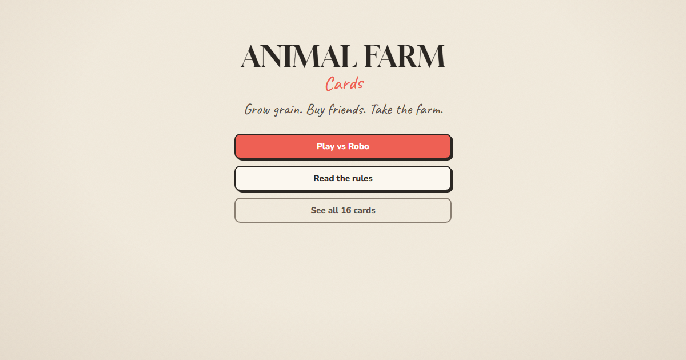

Animal Farm Cards
Grow grain, buy friends and take the farm. A free online card game in English, inspired by George Orwell’s Animal Farm, played against the computer.

Reading · literature · strategy
How to play
- Play against Robo, the computer.
- Collect grain and buy one card per turn at the market.
- There are 16 cards. Read their powers carefully and plan your move.
For teachers
Use it while your class reads Animal Farm to meet the characters and talk about power.